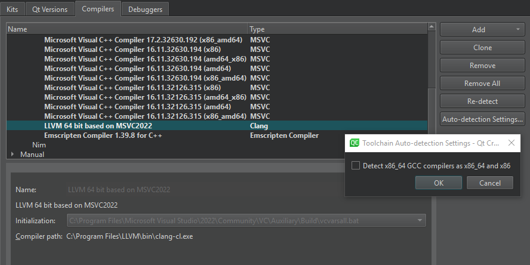

Add compilers
You can develop Qt applications on several 32-bit and 64-bit platforms. Usually, you can build Qt applications on each platform with GCC, a vendor-supplied compiler, or a third party compiler. In Qt Creator, a kit specifies the compiler and other necessary tools for building an application for and running it on a particular platform.
Qt Creator automatically detects the compilers that your system or Qt Online Installer registers and lists them in Preferences > Kits > Compilers.

Note: On macOS, the ccache C/C++ compiler cache is detected automatically only if you installed it using Homebrew or MacPorts. When using MacPorts, you also need to create symlinks, as instructed in How to enable ccache in the MacPorts wiki.
Re-detect compilers
When Qt Creator finds an x86_64 GCC compiler, it sets up an instance for the native x86_64 target. If you plan to create also 32-bit x86 binaries without using a dedicated cross-compiler, select Auto-detection Settings > Detect x86_64 GCC compilers as x86_64 and x86. Then select Re-detect to refresh the list of automatically detected compilers.
To remove manually added compilers, select Remove or Remove All.
Add C or C++ compilers
To add a C or C++ compiler:
- Select Preferences > Kits > Compilers.
- Select Add to add a new compiler or Clone to add another version of the selected compiler.
- Select a compiler in the list.
- Select C or C++.
- Set preferences according to the selected compiler.
Supported compilers
You can add the following compilers to build applications by using other compilers or by using other versions of the automatically detected compilers.
| Compiler | Description |
|---|---|
| Clang | A C, C++, Objective C, and Objective C++ front-end for the LLVM compiler for Windows, Linux, and macOS. |
| clang-cl | An alternative command-line interface to Clang that is compatible with the Visual C++ compiler, cl.exe. |
| GCC (GNU Compiler Collection) | A compiler for Linux and macOS. |
| ICC (Intel C++ Compiler) | A group of C and C++ compilers. Only the GCC-compatible variant, available for Linux and macOS, is currently supported by Qt Creator. |
| MinGW (Minimalist GNU for Windows) | A native software port of GCC and GNU Binutils for use in the development of native Microsoft Windows applications on Windows. MinGW is distributed together with Qt Creator and Qt for Windows. |
| MSVC (Microsoft Visual C++ Compiler) | A C++ compiler that is installed with Microsoft Visual Studio. |
| Nim | The Nim compiler for Windows, Linux, and macOS. |
| QCC | The interface for compiling C++ applications for QNX. |
| Custom | Other than the listed compilers and remote compilers. |
The emscripten compiler is tool chain for compiling to WebAssembly.
Bare-metal compilers
In addition, the Qt Creator Bare Metal Device plugin supports the following compilers.
| Compiler | Description |
|---|---|
| IAREW | A group of C and C++ bare-metal compilers from the various IAR Embedded Workbench development environments. Currently supported architectures are 8051, AVR, ARM, STM8, and MSP430. |
| KEIL | A group of C and C++ bare-metal compilers from the various KEIL development environments. Currently supported architectures are 8051 and ARM. |
| SDCC | An optimizing C bare-metal compiler for various architectures. Currently supported architectures are 8051 and STM8. |
Troubleshoot MinGW compilation errors
If error messages displayed in Compile Output contain paths where slashes are missing (for example, C:QtSDK), check your PATH variable. At the command line, enter the following commands:
where sh.exe where make.exe where mingw32-make.exe
If these commands show paths, they have been added to the global PATH variable during the installation of a tool chain based on Cygwin or MinGW, even though this is against Windows conventions.
To keep working with the third-party tool chain, create a new shell link that adds the required paths (as Visual Studio and Qt do). The shell link must point to cmd.exe:
C:\Windows\System32\cmd.exe /K C:\path_to\myenv.bat
where the /K parameter carries out the command specified in the bat file.
Create the myenv.bat file at path_to, which should be in a convenient location. In the file, specify the paths to the tool chains. For example,
set PATH=C:\path1;C:\path2;%PATH%
where path1 and path2 are paths to the tool chains.
Finally, remove the paths from the global PATH, reboot the computer, and run the where commands again to verify that the global PATH is now clean.
You can use the shell link to run the tools in the third-party tool chains.
See also Compilers, Add Nim compilers, Add custom compilers, Connecting Bare Metal Devices, and Supported Platforms.